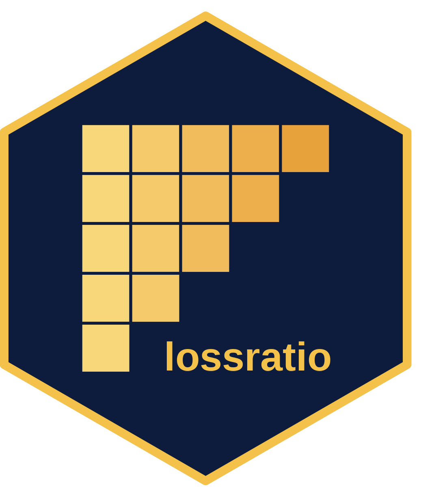

Loss-ratio projection methods: SA, ED, CL
Source:vignettes/loss-ratio-methods.Rmd
loss-ratio-methods.Rmdfit_lr() projects cumulative loss ratio per cohort from
a triangle object. Three methods are available; this
vignette explains the trade-offs.
Notation
For cohort at dev :
- — cumulative loss
- — cumulative risk premium (exposure)
- — age-to-age (chain ladder) factor
- — exposure-driven intensity
- maturity point — dev at which stabilises for group (detected from CV / RSE thresholds)
Method 1: Stage-Adaptive ("sa", default)
The default method exploits the fact that is volatile early and stable late, while behaves the opposite way. SA switches estimators at the maturity point:
Behaviour:
- Before maturity: anchors the loss estimate to premium volume. Avoids the volatile-link explosion that classical CL suffers when early are noisy.
- After maturity: preserves the cohort’s own observed level. Avoids the “all cohorts converge to the average” behaviour that pure ED suffers in the tail.
When to use:
- Long-tail products where development extends across many years.
- Recent cohorts (immature data) mixed with older cohorts (matured).
- Health insurance cohorts with structural pre-/post-maturity difference (e.g. waiting period transitions).
library(lossratio)
data(experience)
exp <- as_experience(experience)
tri <- build_triangle(exp, group_var = cv_nm)
lr_sa <- fit_lr(tri, method = "sa") # default
plot(lr_sa, type = "clr")
summary(lr_sa)Method 2: Exposure-Driven ("ed")
All future increments use ED:
Behaviour:
- Stable when premium volume is informative across full development.
- Loses the cohort-specific level signal — cohorts with higher observed loss converge toward the group-level .
When to use:
- Short-tail products where chain ladder offers no advantage.
- Sparse data where age-to-age factors are unreliable across all links.
- Comparing against SA / CL for sanity check.
Method 3: Classical Chain Ladder ("cl")
Classical Mack model:
Behaviour:
- Standard reserving practice. Equivalent to
fit_cl(tri, value_var = "closs")for the loss projection, butfit_lr()additionally projects exposure forward via CL oncrpand computes the loss-ratio uncertainty via the delta method. - Volatile when early are noisy — small denominators amplify link errors.
When to use:
- Mature, stable portfolios where age-to-age factors are well-behaved across the full development.
- Reserving exercises where regulators expect the classical Mack form for documentation.
Variance and confidence intervals
fit_lr() reports analytical standard errors via the
delta method. Two delta variants:
-
delta_method = "simple"(default) — treats exposure as fixed, . -
delta_method = "full"— accounts for exposure uncertainty and loss-exposure correlationrho:
Bootstrap intervals are also available:
Choosing a method
Quick decision flow:
Is the portfolio fully matured (all cohorts past maturity)?
├── Yes → "cl" (classical, regulator-friendly)
└── No
├── Are early age-to-age factors volatile?
│ ├── Yes → "sa" (default — exposure-driven smoothing)
│ └── No → "cl"
└── Is exposure (rp) the more informative signal?
├── Yes → "ed"
└── No → "sa"In practice: start with "sa" (the
default), then run "cl" and "ed" for
sensitivity. If all three agree, the projection is robust. If they
diverge, inspect maturity detection and the underlying ata factors.